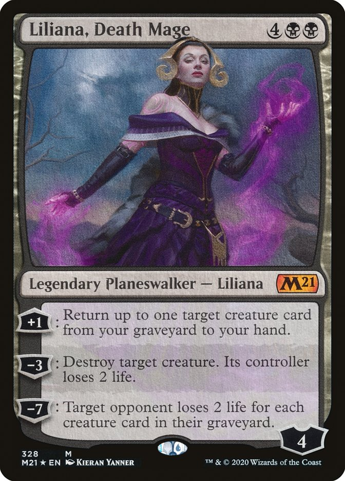
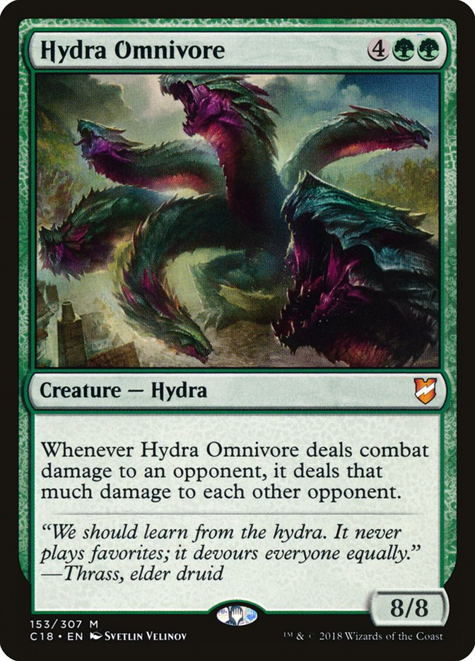
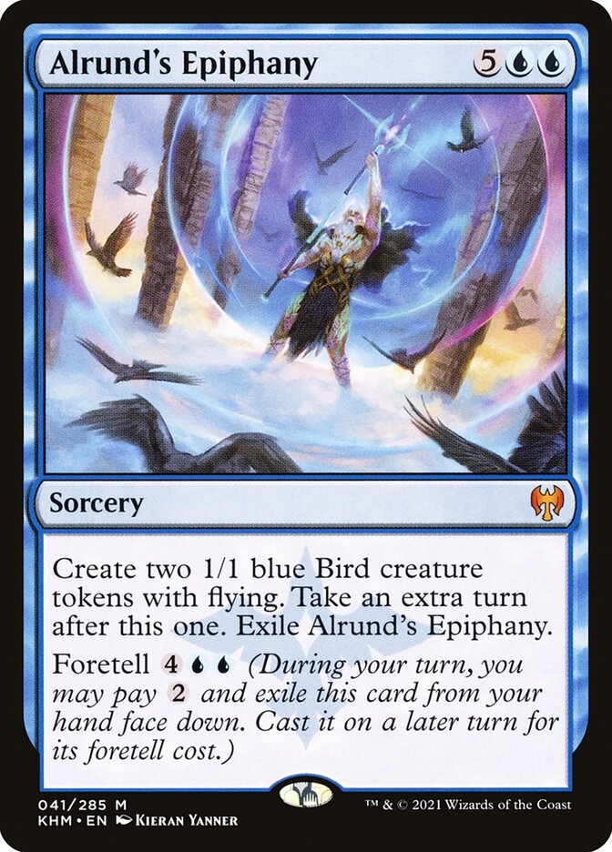
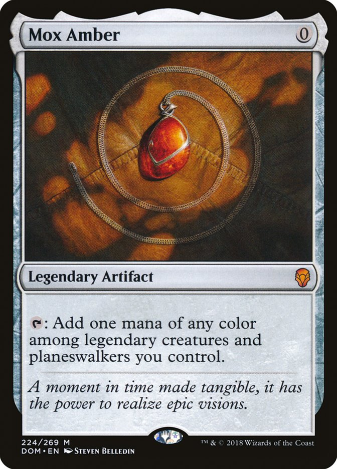
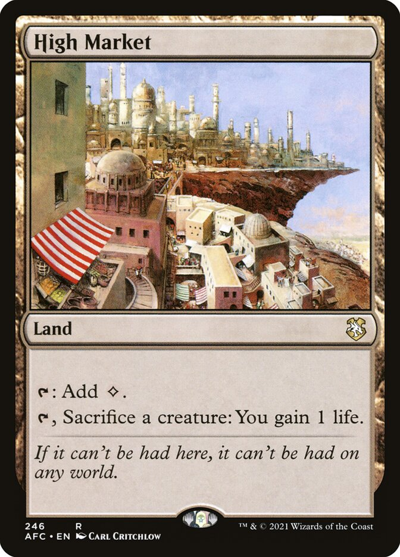

Como a história é contada
Cartas
-

- Planeswalker
Representam os poderosos magos capazes de transitar pelo multiverso. -

- Criatura
Representam os outros personagens que fazem parte da historias, como monstros, pessoas, raças, especies, etc. -

- Magias e Feitiços
Representam as magias e feitiços utilizados. -

- Artefatos
Representam as armas, joias, equipamentos e outros objetos inanimados. -

- Terreno
Representam os lugares importantes no qual se passa a história.
As cores
No Magic, as cartas existem em cinco cores distintas: Branco, Azul, Preto, Vermelho e Verde. Existem ainda cartas incolores (artefatos e terrenos), assim como multicoloridas que são as cartas que têm mais de uma identidade de cor.
- Branco
- Representa a ordem, a justiça, proteção, a cura, a luz e a lei.
- Azul
- Representa o conhecimento, a ilusão e a astúcia.
- Preto
- Representa as trevas, a cobiça, a morte, a ambição desmedida e a pelo poder a qualquer preço.
- Vermelho
- Representa o fogo, a destruição, a impulsividade, a paixão, a liberdade e o caos.
 Verde
Verde- Representa a natureza, a vida, o crescimento e a força bruta.